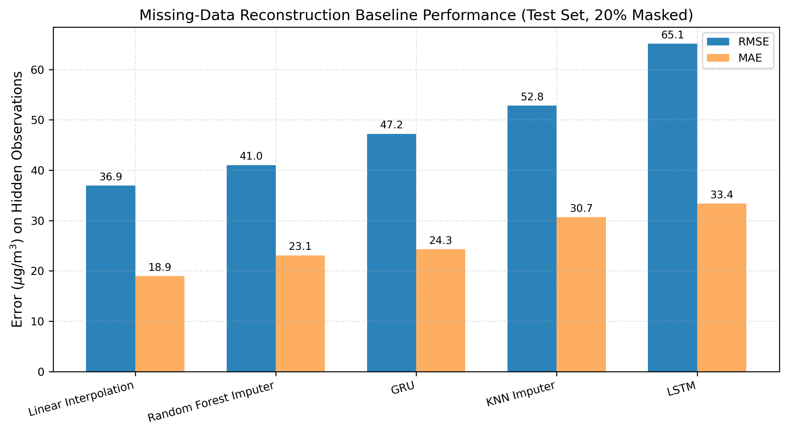
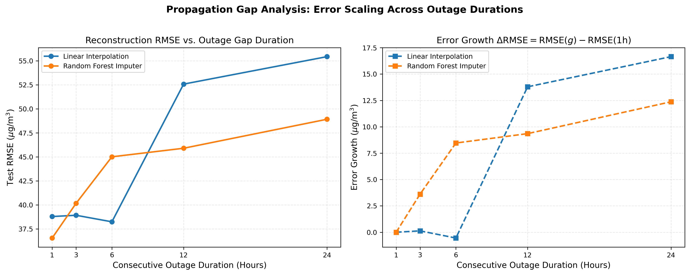
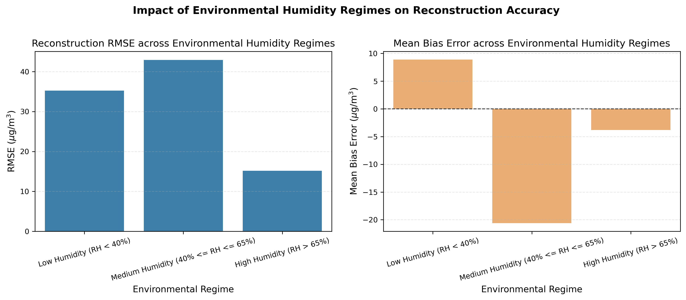
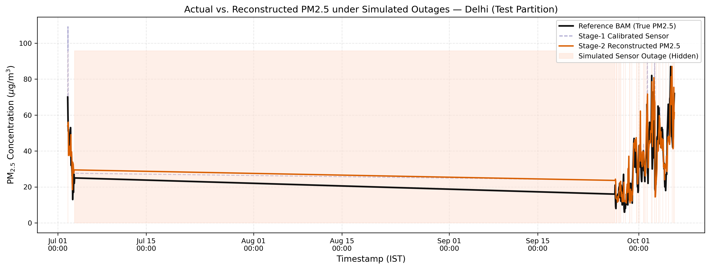

Checkpoint 2 — Evaluation of Imputation Baselines, Consecutive Outage Scaling, and Environmental Regimes
Raw Sensor → Stage-1 Calibration → Stage-2 Imputation → Reconstructed PM2.5.
| Imputation Baseline | Hidden Points | Hidden MAE (μg/m³) | Hidden RMSE (μg/m³) | Hidden R² | Hidden MBE | Hidden Rel Bias |
|---|---|---|---|---|---|---|
| Linear Interpolation | 769 | 18.94 | 36.93 | 0.8361 | -9.48 | -11.1% |
| Random Forest Imputer | 769 | 23.08 | 41.02 | 0.7977 | -7.85 | -9.1% |
| GRU | 769 | 24.29 | 47.22 | 0.7320 | -13.21 | -15.4% |
| KNN Imputer | 769 | 30.69 | 52.82 | 0.6647 | -9.48 | -11.1% |
| LSTM | 769 | 33.37 | 65.14 | 0.4900 | -25.72 | -30.0% |

Demonstrates how reconstruction error compounds as consecutive outage duration grows from 1 hour to 24 hours.
| Imputation Model | Gap Length | Hidden Points | MAE (μg/m³) | RMSE (μg/m³) | R² | Error Growth ΔRMSE (μg/m³) |
|---|---|---|---|---|---|---|
| Linear Interpolation | 1 hours | 744 | 18.49 | 38.79 | 0.7922 | +0.00 |
| Random Forest Imputer | 1 hours | 744 | 21.31 | 36.55 | 0.8155 | +0.00 |
| Linear Interpolation | 3 hours | 744 | 19.95 | 38.92 | 0.7765 | +0.13 |
| Random Forest Imputer | 3 hours | 744 | 23.37 | 40.16 | 0.7619 | +3.61 |
| Linear Interpolation | 6 hours | 746 | 24.83 | 38.24 | 0.8141 | -0.55 |
| Random Forest Imputer | 6 hours | 746 | 27.65 | 45.01 | 0.7425 | +8.46 |
| Linear Interpolation | 12 hours | 751 | 31.80 | 52.58 | 0.6212 | +13.79 |
| Random Forest Imputer | 12 hours | 751 | 30.70 | 45.90 | 0.7113 | +9.35 |
| Linear Interpolation | 24 hours | 750 | 39.80 | 55.44 | 0.5778 | +16.65 |
| Random Forest Imputer | 24 hours | 750 | 34.35 | 48.92 | 0.6714 | +12.37 |

| Environmental Regime | Hidden Points | MAE (μg/m³) | RMSE (μg/m³) | R² | MBE (μg/m³) | Relative Bias (%) |
|---|---|---|---|---|---|---|
| Low Humidity (RH < 40%) | 254 | 25.43 | 35.22 | 0.6819 | +8.89 | +11.4% |
| Medium Humidity (40% <= RH <= 65%) | 411 | 27.46 | 42.92 | 0.8114 | -20.61 | -16.9% |
| High Humidity (RH > 65%) | 81 | 9.59 | 15.15 | 0.9581 | -3.82 | -5.9% |

